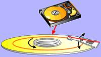
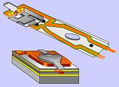
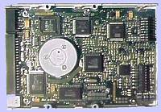
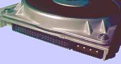

| Основа жесткого диска —
это диски, расположенные на оси вращения. Это пластины из керамики, алюминия
стекла, пластика, на которые с обеих сторон нанесено магнитное покрытие.
Скорость вращения дисков — от 3600 до 7200 об/мин. |
 |
| Головки чтения-записи размещены
на специальном позиционере типа тонарма. Головки работают с зазором от
поверхности диска около 0,13 мкм. Зазор поддерживается воздушной подушкой
от вращения дисков. |
 |
| Электронная плата обеспечивает
функционирование жесткого диска. Она обрабатывает команды контроллера,
стабилизирует скорость вращения, генерирует сигналы для режима записи,
усиливает сигналы в режиме чтения и др. |
 |
| Для подключения жесткого
диска к системе на его корпусе установлены два разъема. Первый (4-контактный)
предназначен для подключения питания, второй — для присоединения интерфейсного
кабеля. |
 |